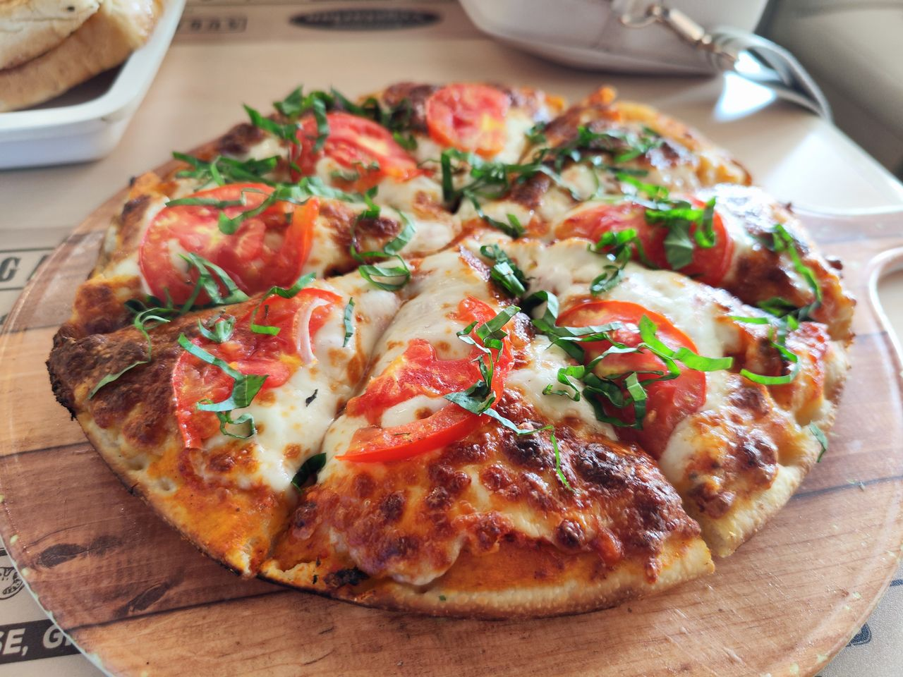

Pizza Recipe

Description
A classic pizza recipe with a homemade crust, tomato sauce, and your favorite toppings.
Ingredients
- 2 1/4 cups all-purpose flour
- 1 packet active dry yeast
- 1 teaspoon sugar
- 1 teaspoon salt
- 1 cup warm water
- 2 tablespoons olive oil
- 1/2 cup tomato sauce
- 1 1/2 cups shredded mozzarella cheese
- Your favorite pizza toppings (pepperoni, mushrooms, bell peppers, etc.)
Steps
- In a large bowl, combine the flour, yeast, sugar, and salt.
- Add the warm water and olive oil, and mix until a dough forms.
- Knead the dough on a floured surface for about 5-7 minutes, until smooth and elastic.
- Place the dough in a greased bowl, cover, and let it rise for about 1 hour, or until doubled in size.
- Preheat your oven to 475°F (245°C).
- Roll out the dough on a floured surface to your desired thickness and transfer it to a greased baking sheet or pizza stone.
- Spread the tomato sauce evenly over the dough, leaving a small border around the edges.
- Sprinkle the shredded mozzarella cheese over the sauce, and add your favorite toppings.
- Bake the pizza in the preheated oven for 12-15 minutes, or until the crust is golden and the cheese is bubbly and melted.
- Remove the pizza from the oven, let it cool for a few minutes, then slice and serve.
Home